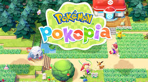

Pokémon Ventos e Ondas é anunciado e tem tradução em português, além de um gráfico melhorado, com um mundo mais detalhado, e os novos iniciais são Ponpom de fogo, Browt de grama e Gecgua

Pokémon Pokópia é o novo jogo de Pokémon para o switch 2, ele é um spinoff de pokémon, onde vários dessastres naturais aconteceram na terra, e com isso os humanos saíram da terra , deixando os pokémons para trás e agora os pokémons precissam fazer a Terra habitável novamente. Você joga como um ditto, tem uma pegada de animal crossing, e tem um gráfico mais básico e uma pegada calma com uma história simples mas boa, é bom para relaxar e se divertir muito.
